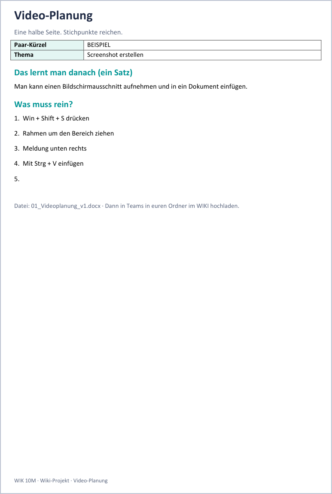

Video-Planung
| Bereich | Grundlagen |
|---|---|
| Programm | Word |
| Umfang | eine halbe Seite |
| Datei | 01_Videoplanung_v1.docx |
| Vorlage | herunterladen |
| Beispiel | herunterladen |
Die Video-Planung ist der erste Schritt für dein Video. Du schreibst auf, zu welchem Thema das Video ist und was alles hineinmuss. Mehr nicht: Eine halbe Seite mit Stichpunkten reicht. Danach weißt du, was du aufnehmen musst, und kannst später die Einblendungen direkt aus den Stichpunkten machen.
1 Vorlage verwenden
- Lade die Vorlage herunter und öffne sie in Word.
- Klicke auf Datei → Speichern unter und speichere sie in deinem Ordner mit dem Namen
01_Videoplanung_v1.docx. - Fülle die Felder aus (siehe unten). Lösche keine Überschriften.
- Speichern und in Teams in deinen Ordner im WIKI hochladen.
2 Was kommt hinein?
| Feld | Was schreibst du? | Beispiel |
|---|---|---|
| Paar-Kürzel | Euer Kürzel, keine Namen. | AB-CD |
| Thema | Der Titel deiner Themenseite, genau so geschrieben. | Screenshot erstellen |
| Das lernt man danach | Ein Satz: Was kann man nach dem Video? | Man kann einen Bildschirmausschnitt aufnehmen und in ein Dokument einfügen. |
| Was muss rein? | 3 bis 6 Stichpunkte in der Reihenfolge, wie sie im Video kommen. Jeder Stichpunkt ist ein Schritt und später eine Einblendung. | 1. Win + Shift + S drücken 2. Rahmen um den Bereich ziehen 3. Meldung unten rechts 4. Mit Strg + V einfügen |
Die Stichpunkte sind kurz: ein Satzteil, keine ganzen Sätze. Alles, was auf der Themenseite unter „Das muss mindestens vorkommen“ steht, muss in deinen Stichpunkten auftauchen.
3 Beispiel
So sieht eine ausgefüllte Video-Planung aus. Sie passt auf eine Seite und besteht nur aus diesen vier Feldern:


Die leere Vorlage sieht so aus, nur ohne Text: Vorlage_01_Videoplanung.docx.
4 Gute und schlechte Stichpunkte
| Zu ungenau | Gut |
|---|---|
| Screenshot machen | Win + Shift + S drücken |
| Etwas markieren | Rahmen um den Bereich ziehen |
| Text ändern | Text markieren und F, K oder U klicken |
| Fertig machen | Datei speichern: Strg + S |
Ein guter Stichpunkt sagt, was man tut und wo oder womit. Wer ihn liest, kann den Schritt sofort nachmachen.
5 Checkliste
- Paar-Kürzel und Thema sind eingetragen, das Thema heißt genau wie die Themenseite.
- „Das lernt man danach“ ist genau ein Satz.
- 3 bis 6 Stichpunkte, in der Reihenfolge des Videos.
- Jeder Stichpunkt ist ein Schritt, den man nachmachen kann.
- Die Datei heißt
01_Videoplanung_v1.docxund liegt in deinem Ordner in Teams.
6 Siehe auch
- Video-Tutorial: die Anforderungen an dein Video
- Wiki-Seite schreiben: der dritte Schritt
- Mitmachen: der ganze Ablauf